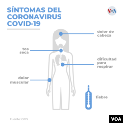

Los coronavirus (CoV) son virus que surgen periódicamente en diferentes áreas del mundo y que causan Infección Respiratoria Aguda (IRA), es decir gripa, que pueden llegar a ser leve, moderada o grave.
El nuevo Coronavirus (COVID-19) ha sido catalogado por la Organización Mundial de la Salud como una emergencia en salud pública de importancia internacional (ESPII). Se han identificado casos en todos los continentes y el 6 de marzo se confirmó el primer caso en Colombia.
La infección se produce cuando una persona enferma tose o estornuda y expulsa partículas del virus que entran en contacto con otras personas. Este mecanismo es similar entre todas las Infecciones Respiratorias Agudas (IRA).
Se conoce que cualquier persona puede infectarse, independientemente de su edad, pero hasta el momento se han registrado relativamente pocos casos de COVID-19 en niños. La enfermedad es mortal en raras ocasiones, y hasta ahora las víctimas mortales han sido personas de edad avanzada que ya padecían una enfermedad crónica como diabetes, asma o hipertensión.
El nuevo Coronavirus causa una Infección Respiratoria Aguda (IRA), es decir una gripa, que puede ser leve, moderada o severa. Puede producir fiebre, tos, secreciones nasales (mocos) y malestar general. Algunos pacientes pueden presentar dificultad para respirar.
La medida más efectiva para prevenir el COVID-19 es lavarse las manos correctamente, con agua y jabón. Hacerlo frecuentemente reduce hasta en 50% el riesgo de contraer coronavirus. De igual manera, se recomiendan otras medidas preventivas cotidianas para ayudar a prevenir la propagación de enfermedades respiratorias, como:
Se lleva un control en todo el mundo de las muertes provocadas por el coronavirus. La Organización Mundial de la Salud (OMS) informa que los pacientes que están falleciendo tienden a ser personas mayores y el 40 % de estos padecían afecciones médicas subyacentes, lo cual guarda una relación con los brotes anteriores de otros coronavirus.
Actualmente estan en el proceso de creación de una vacuna pero los antibióticos no funcionan. Sin un tratamiento concreto disponible, los profesionales de atención de la salud generalmente tratan los síntomas y procuran que el paciente se sienta mejor.